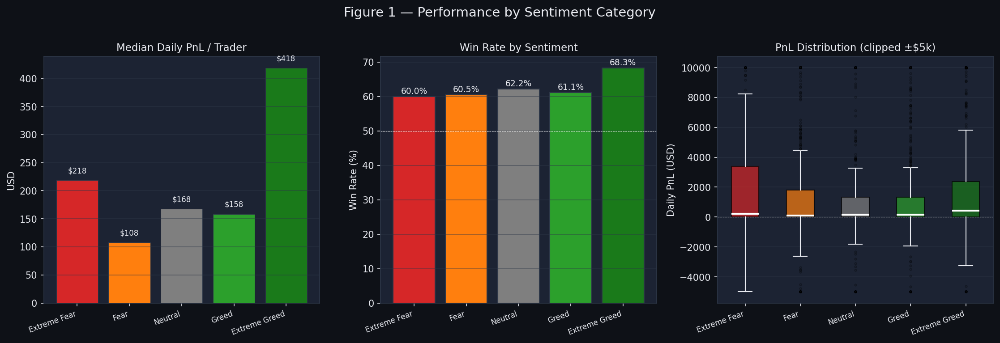
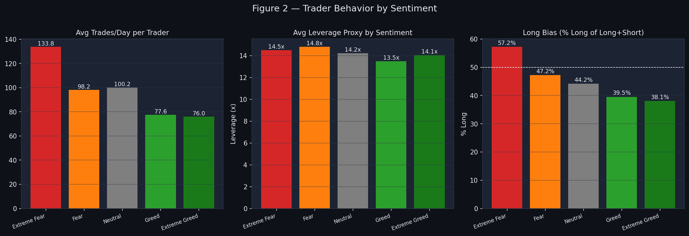
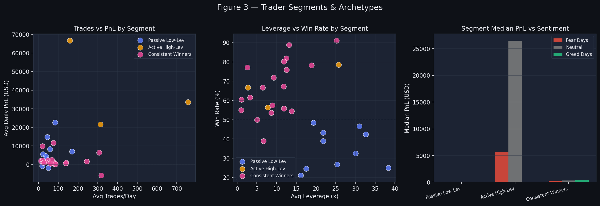
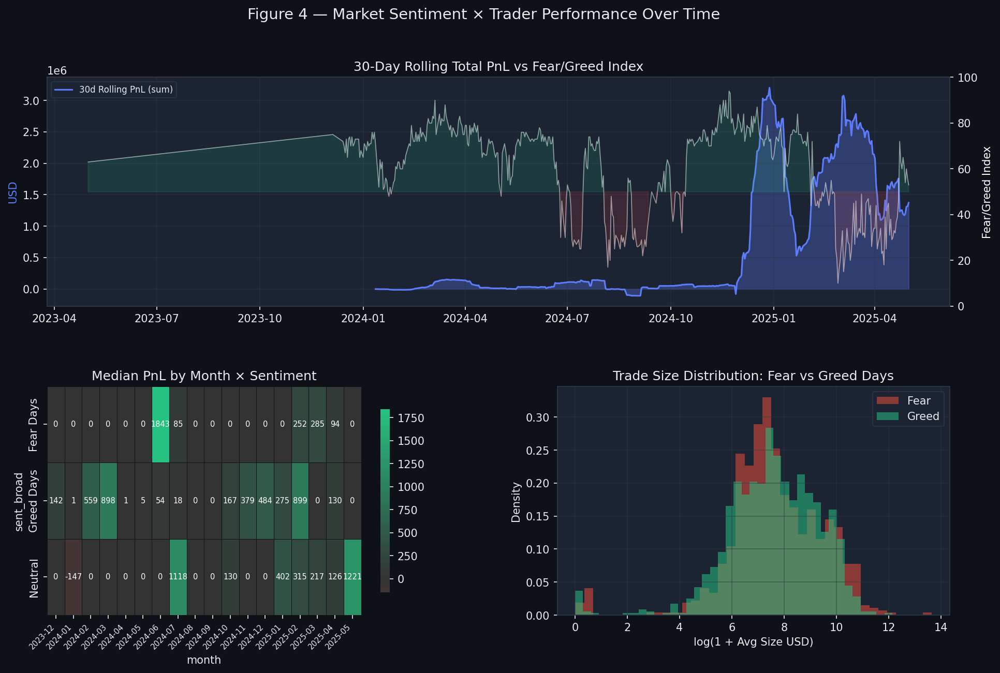

| Classification | Days | % of Period | Broad Bucket |
|---|---|---|---|
| Extreme Greed | 526 | 22.5% | Greed Days |
| Greed | 648 | 27.7% | Greed Days |
| Neutral | 376 | 16.1% | Neutral |
| Fear | 630 | 26.9% | Fear Days |
| Extreme Fear | 160 | 6.8% | Fear Days |
Timestamps in trader data were in IST format (DD-MM-YYYY HH:MM); converted to UTC date for daily alignment with the Fear/Greed index (which uses UTC dates).

| Sentiment | Obs (acct-days) | Median PnL | Mean PnL | Win Rate |
|---|---|---|---|---|
| Extreme Fear | 160 | $218 | $4,619 | 60% |
| Fear | 630 | $108 | $5,329 | 60% |
| Neutral | 376 | $168 | $3,439 | 62% |
| Greed | 648 | $158 | $3,318 | 61% |
| Extreme Greed | 526 | $418 | $5,162 | 68% |
Key finding: Extreme Greed days stand out with the highest median PnL ($418) and win rate (68%), nearly 4× the median PnL of plain Fear days. During Extreme Fear, mean PnL is elevated ($4,619) suggesting a few big winners during crisis volatility, but the median is low — implying a wide distribution. Win rates are relatively stable across conditions (60–68%), meaning direction of trades matters more than frequency.

| Sentiment | Avg Trades/Day | Avg Leverage (×) | Long Bias (%) |
|---|---|---|---|
| Extreme Fear | 134 | 14.5× | 57% |
| Fear | 98 | 14.8× | 47% |
| Neutral | 100 | 14.2× | 44% |
| Greed | 78 | 13.5× | 40% |
| Extreme Greed | 76 | 14.1× | 38% |
Key behavioral patterns:

| Segment | Avg Daily PnL | Win Rate | Avg Trades/Day | Avg Leverage | Avg Size (USD) | Profile |
|---|---|---|---|---|---|---|
| Passive Low-Lev | $6,566 | 35% | 53 | 25.4× | $5,343 | Low win rate but occasional large wins; high leverage despite fewer trades |
| High-Freq Winners | $40,601 | 67% | 410 | 12.1× | $21,900 | Dominant earners; large positions, controlled leverage, consistent wins |
| Active High-Lev | $2,137 | 67% | 97 | 9.7× | $8,572 | Good win rate but modest PnL; moderate activity and position sizes |

The rolling PnL chart shows that the portfolio's peak profitability periods (late 2023, early–mid 2024) coincide with sustained Greed regimes. Fear spikes (red zones) tend to create short-term PnL drawdowns followed by sharp recoveries. The trade size distribution confirms traders take larger positions on Greed days and more smaller exploratory trades during Fear.